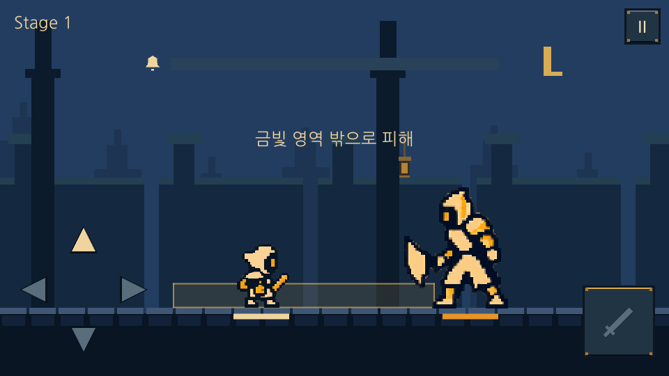
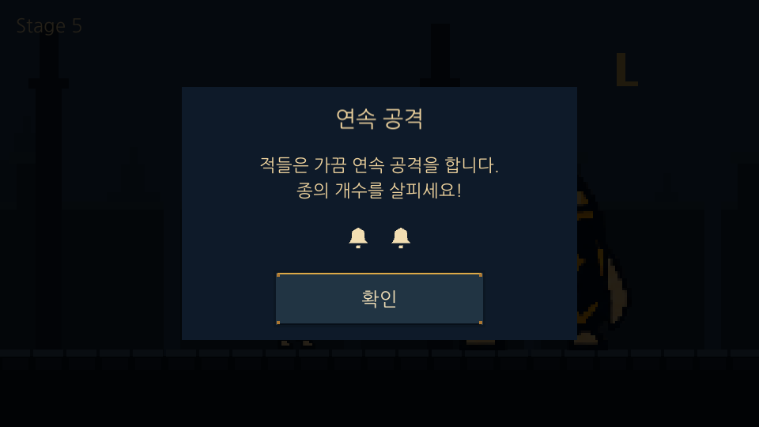
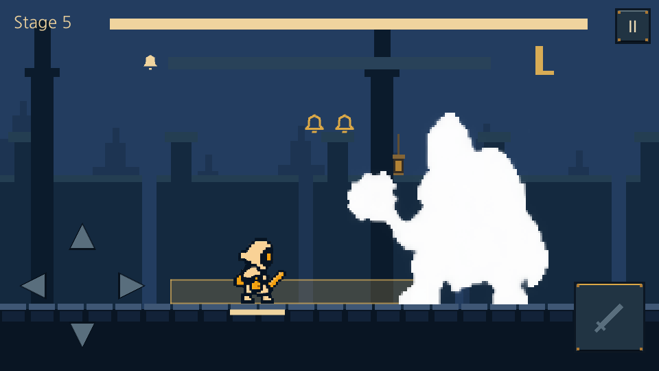
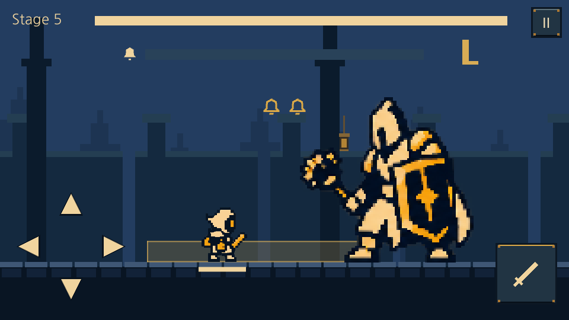
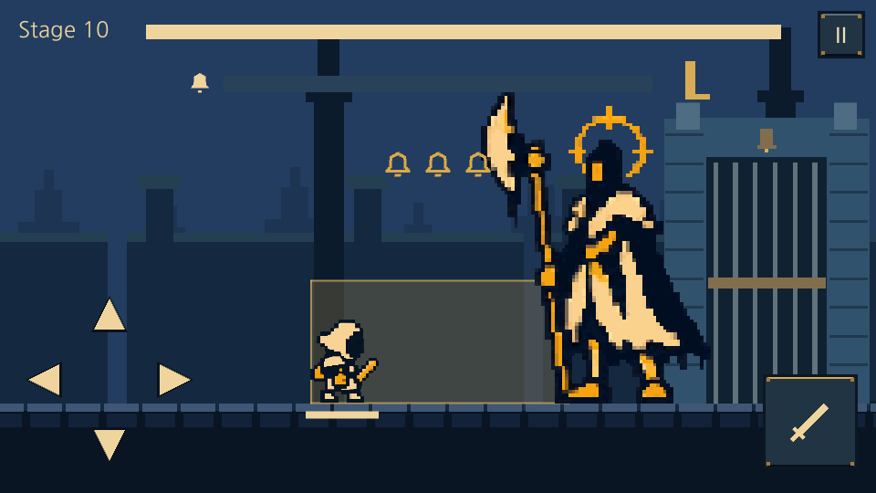
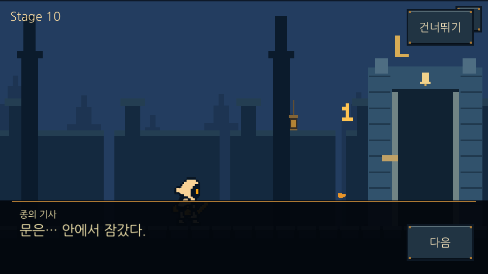

기존 몬스터 복원 · 실제 유니티 실행
원본 5종과 기존 공격을 유지하고 피격은 흰색 점멸로 처리합니다. 신규 후보는 인게임에 배치하지 않았습니다.
모션 미리보기 · 실행 검사 기록
Stage 1 · 기존 성문 파수병
Stage 5 · 중앙 안내 유지
피격 · 하얀색 (45ms 유지 구간을 멈춰 촬영, 일시정지 메뉴만 숨김)
피격 120ms 이후 · 원래 색
Stage 10 · 기존 종의 기사
처치 후 성문과 진행 유지